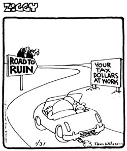

"Inflation should wear a label: 'Made and Manufactured in Washington, D.C.' "
Nothing can replace the dollar . . . and it almost has.
Every business has its hazards. People in the news business complain that one of their own special hazards is taking the blame for all the bad news in the world. And since much of the bad news nowadays frequently has something to do with governments, governments especially are often angry at the press. In fact, there are about 90 countries in the world today whose leaders object to bad news so much that they have abolished the free press. They operate on the theory that if bad news is not reported, it doesn't exist.
Editors and publishers in countries where the press remains free recognize this attitude for the threat that it is. They combat it constantly by defending their right to publish the news as they see it, and also by reminding the public that the First Amendment is the very linchpin of our liberty.
To get blamed for acts you do not commit, or for the bad news created by somebody else, is a hazard that is not unique to the news business. It happens to bankers, businessmen, labor leaders, and almost anyone else involved in handling money. And we in the business community are being treated to an especially strong dose of this misdirected anger right now.
The bad news that business has been reporting is inflation. The price of everything is going up, which is another way of saying that the value of our money is going down. Since only the government prints money, it does not like people being told that the value of its product is deteriorating. So we find government spokesmen traveling around the country telling people that the real villains in this inflation story are business men who are raising their prices or labor unions which are raising wages.
But rising prices do not cause inflation, they report it. When a government-any government-starts trying to eliminate inflation by controlling wages and prices, what it is really doing is asking all of us to suppress the bad news that it has printed too much money. The way to stop the bad news about the deteriorating value of our money, according to government, is to conceal this from the people by freezing wages and prices.
Prices and wages represent an essential form of economic speech: Money is just another form of information. When the freedom of this economic speech is restricted, we are all not only penalized, we are misled. In (Federal Reserve) Governor Wallich's words: "inflation is like a country where nobody speaks the truth."
Prices enable consumers to communicate with producers and tell them what they want or don't want If prices are censored, or frozen, they cannot tell producers what goods or services people want or don't want to purchase. Examples abound.
When the government artificially restrained prices for natural gas, the price told consumers that this form of energy was relatively cheap and in ample supply. Believing what they heard, people built houses heated with natural gas. The same controlled price told producers that people don't want much natural gas-it was not in demand-and therefore they had no incentive to increase production. Everybody was being deceived and we all know about the results in the winter of 1976-77. People are often deceived also about the nature of money.
As a piece of paper in your pocket, money has no intrinsic value. It is worthless. Its only value consists in what it- represent, which is a claim on a share of the world's goods and services. If the government increases the pieces of paper faster than the private sector can produce goods and services, then every piece of paper is going to represent a smaller claim on whatever people have to sell. The only way to keep that from happening is either to increase the production of something salable, or else slow down production of the pieces of paper.
The plain fact is that the reason we have inflation in this country is that since 1967 the government has caused the money supply to grow nearly three times as fast as the goods and services that can be bought with it. That statement can be fiddled with and footnoted until everybody forgets what they're talking about. But the bad news will not go away. And no amount or kind of wage and price control can make the government's paper money worth more of the world's goods than the world is prepared to give for it.
Governments' ability to devastate an economy and blame it on someone else can never be overestimated. They don't even have to print their own paper. They have frequently managed to do it with gold and sliver. Ancient Rome added cheap alloys to its gold coins and suffered inflation as a result. Spain had a monopoly on the riches of El Dorado: The precious metals flowing into Europe from Mexico and Peru formed the basis for an inflation that in the end destroyed the Spanish Empire.
Every time a now silver consignment arrived at Seville, a ripple of price increases spread across Europe because there was suddenly more money with which to buy things. And because the effect was always felt first and strongest in Spain, that country continuously occupied top place in the inflationary table. Spanish costs became increasingly uncompetitive, and the Dutch got rich buying cheaper goods in the north and shipping them south.
The Spanish solution was to sink merchant ships and hang businessmen.
You can find the same story of unsuccessful repression of economic news being repeated all the way back to the Roman Emperor Diocletian, who may have coined the best name yet for government price controls: the argumentum baculinum, or the argument of the club.
What Diocletian could not accomplish with the Roman legions and Philip the Second could not do with the Spanish Armada, the Council of Wage and Price Stability now proposes to do with a staff of 233 civil servants. Once again we hear repeated the rephrasing of Diocletian's edict, which began with a notable assertion: "Uncontrolled economic activity is a religion of the godless. "
Whatever the government-any government-decides to call its price control methods doesn't really matter. Whether it's jawboning, income policy, voluntary guidelines, mandatory ceilings, or an economic police state, it all comes back to Diocletian's argumentum baculinum. All it means is that the government threatens to hit you harder later on if you don't behave after it hits you the first time. History demonstrates that once a government picks up that club, it finds it very hard to put it down again.
The American press would not tolerate for one moment an attempt by the government to suppress news of riots or political demonstrations on the grounds that it wants to "insure domestic tranquility". The press knows a threat to the First Amendment when it sees one.
Yet on the grounds of "insuring price stability", the government assumes the power to tell us what we can be paid for our labor and what we can charge for our products, and the only question asked by most of the press is: Will it work? That is the wrong question. The right question is: How does it affect individual liberty? Is not one of the most basic human rights the right of a person to sell his or her labor at what the market will bring?
There are ten amendments in the Bill of Rights, although sometimes it seems that the press is so busy defending the first one that it is hard to get equal time for the other nine.
Let me recall one of them-the Ninth Amendment-which few people ever read any more, let alone defend. It says: "The enumeration in the Constitution, of certain rights, shall not be construed to deny or disparage others retained by the people." Is something being disparaged when the government's chief inflation-fighter tells a group of businessmen, as he did recently in Chicago, that "We will, with a degree of enthusiasm that I suspect many of you may consider unseemly, identify the miscreants publicly"?
A miscreant, according to my dictionary, is someone who is villainous, unscrupulous, and devoid of conscience. And now all you have to do to qualify for that description, in the eyes of your government, is to insist on your right to decide what wage you're willing to work for, or how much to charge for whatever you're selling. I do not believe that was the kind of society that the Founding Fathers had in mind, or one that many Americans will enjoy living in if it becomes a permanent condition . . . which it shows every sign of doing.
The government adopts monetary policies and fiscal policies which produce inflation in response to popular demand. Since there is no "Truth in Politics" law, we must rely on the vigilance of the press to reveal the true costs of those policies. When we come to understand what is happening, I do not believe that Americans are ready to sell their birthright of individual freedom. But someone has to make it clear that the collision course between government price and wage controls and personal liberty is inevitable because, in the end, government allocation of economic resources requires force. Someone has to point out-and keep pointing out-that every time the tide recedes a little after one of these floods of "emergency" regulations, there is less sand left on the beach for free people to stand on.
If it finally gets down to a single grain, even though that grain is labeled "free speech and the First Amendment", you'll find that it isn't worth much.
[The above article-which originally appeared in the May 4, 1979 issue of the Wall Street Journal and is reprinted here by permission-was adapted from remarks by Walter B. Wriston, chairman of Citicorp, to the American Society of Newspaper Editors.]
Did you know that Three Mile Island is only the most visible tip of the nuclear nightmare? In April, for instance, a Maine Yankee atomic plant's secondary cooling system sprang a leak and spilled 4,000 gallons of radioactive water and steam onto the installation's floor . . . and an operator then failed to run the escaping gases through a filter before releasing them into the atmosphere. Or did you know that at the COGEMA power plant outside Cherbourg, France someone smuggled three lengths of radioactive magnesium out of the facility and placed them under the seat of shift chief Guy Busin's car . . . where-until they were found-they emitted a constant 10 rem of radiation (twice the amount considered acceptable for workers in the nuclear industry on an annual basis)?
Or did you know that the "terrible and unwarranted" corporate profits for the last quarter of 1978 (which Little Jimmy Carter railed against so viciously just before the Teamsters' contract was signed) came nowhere near the 26.2% rise that was reported at the time? Instead-when adjusted for inflation, depreciation, and taxes-those profits rose a mere 1.6 % . . . while the amount of real goods and services produced during the same period expanded by 6.1%. Which means, of course, that business profits per unit actually fell dramatically during the quarter in real terms . . . and that Little Jimmy Carter-once again-lied to us all.
And did you know that only about three cents of the roughly 80 cents you now spend for a gallon of gasoline goes to the big oil companies as profit . . . while a full twenty cents is taken by the government in the form of taxes? Did you know that? Sort of makes you wonder who's trying to kid whom about "windfall" petroleum profits, doesn't it?
For that matter, did you know-at least according to "official" Alice-in-Wonderland figures-that you have to be pretty damn rich even to be poor in this country any more? That's the word from the U.S. Labor Department, at any rate, which reports that in 1978 it took $11,546 (up 10.2% from 1977's $10,481) to support an urban family of four on a "low budget". And did you know that 10.2% cost-of-living increase reflects a 2.2% rise in the price of clothes, a 6.7% increase in the cost of transportation, a 7.2% jump for housing, a 12% boost in food prices . . . and a whopping 30% skyrocket in federal and state income taxes? (If Little Jimmy Carter and "inflation fighter" Alfred Kahn really want to fight inflation . . . guess where they should start?)
And did you know that our government-created inflation has now reached the beginnings of the "blow-off" stage? That is: We're all starting to buy things now whether we need them or not because we're all increasingly sure that everything will cost more tomorrow. We're all saving less (who wants to "earn" 6% interest on savings and then pay taxes on those "earnings" when the dollar is shrinking 15% annually and there's no "earnings" tax to pay once that same dollar is invested in gold or silver or hand tools or books or other real and useful goods?). We're all trading our depreciating paper money in on appreciating hard goods at a rapidly increasing rate. This trend will soon start to feed on itself . . . and then society will really come unstuck.
And did you know that most big cities right here in the Land of Plenty have only enough food on their markets' shelves to feed the residents of those same urban areas . . . for about two and a half days? (What's gonna happen when the real petroleum crunch comes and the trucks all stop rolling?)
And did you know that retired U.S. Army Major General John K. Singlaub and hundreds of other concerned military authorities throughout the steadily shrinking Free World feel that it is only a matter of time until Saudi Arabian oil fields are knocked out by commandos ("300 men could turn Saudi production off for a year with just one raid") . . . or until tanker traffic from the Arabian Gulf-which carries half of all the oil now used in Japan, Western Europe, and the U.S.-is shut off ("the sinking of a single big tanker in the main channel would do it")?
Or did you know that Saudi Arabia itself-the last really potent friend and ally that the United States has letf in the Middle Eastern "oil cartel" . . . is currently so sickened by Carter policies and so threatened by Soviet muscle-flexing that it is taking pains to put distance between itself and the U.S.? Did you know that? (But "nothing can happen to U.S.-Saudi Arabian ties", say the self-proclaimed"experts" in Washington . . . just what they said, only a few months ago, about U.S.-Iranian ties.)
And do you know of a single good reason for the Carter Administration to have so badly misplayed its hand with Mexico that our southern neighbor (which may be sitting on as much petroleum as the whole Middle East put together) now shows very little enthusiasm about selling us any meaningful quantities of that oil?
And do you know why-when we have enough proven reserves of coal right here within our borders to supply us with our total energy needs for anywhere from 300 to 500 years-we have not yet (as Britain and Russia, to name just two other countries, have done) begun even the first serious "coal into crude oil" conversion project here in the United States?
The message, of course, is clear: You are being screwed-and screwed daily-by the so-called "experts" who now increasingly run your life.
This is a wonderful, much-blessed nation that has been bountifully endowed with more than enough resources to supply us all-even at current population levels-with everything we need for a Good Life.
But we've allowed ourselves to fall into the hands of greedy, grasping, vainglorious, power-hungry, shortsighted "politicians" and "economists" who create inflation ... knowingly shift the blame for that inflation onto the innocent shoulders of the decent and honorable citizens and companies that are still making useful contributions to our society . . . lie about the dangers of nuclear power ... increase our taxes only to use the revenues against us . . . insult our allies and support our enemies . . . and have now mismanaged our nation's economic and energy policies so badly that yesterday's Three Mile Island "accident" and today's stagflation and gas lines will, very shortly, look like the Good Old Days of Peace, Prosperity, and Safety.
If you're smart you will not continue to put the fate of yourself and your family into the hands of such criminals and mad men. Instead, you will pry yourself out of the credit-card/computerized/paper economy that they control as rapidly and as completely as possible and plunk yourself down in a real wealth economy of your own. An economy that allows you to build your own earth-sheltered (for radiation protection, low initial cost, and low upkeep) passively solar-heated and -cooled home, grow your own food, run your own "cash and carry" or "pay with barter" business, and otherwise deal in real goods and services on your own terms without the "help" of the featherbrained bureaucrats in Washington.
This column and this magazine have done far more over the years to put the necessary "tools of change" into your hands than any other single force in our society. But a publication can only do so much. Sooner or later you'll just have to take the bit in your teeth and make the actual change outlined above on your own. And-as noted on these pages in the last installment of this column-it's always far better to make that switch ten years too early than a single day too late. Time is short. You've been warned.
|
|
 |
|